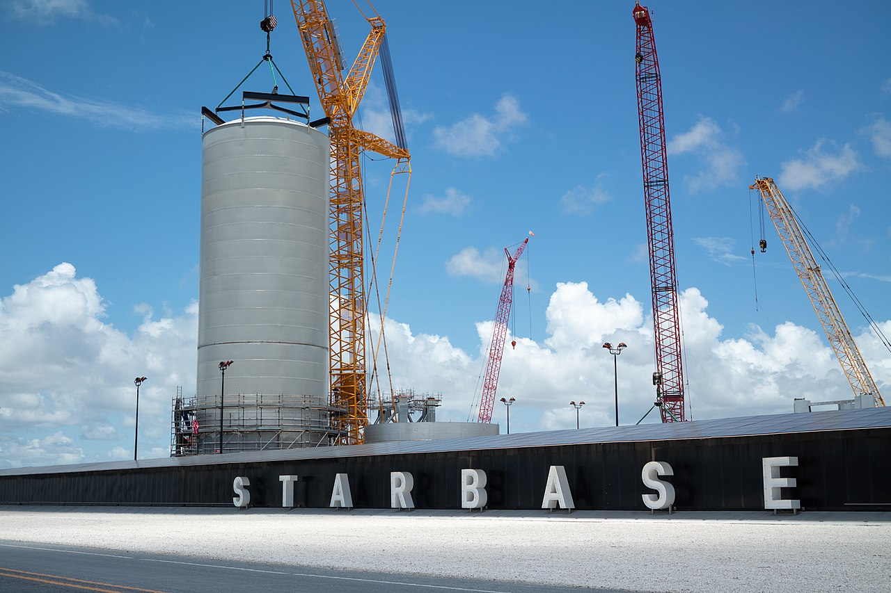
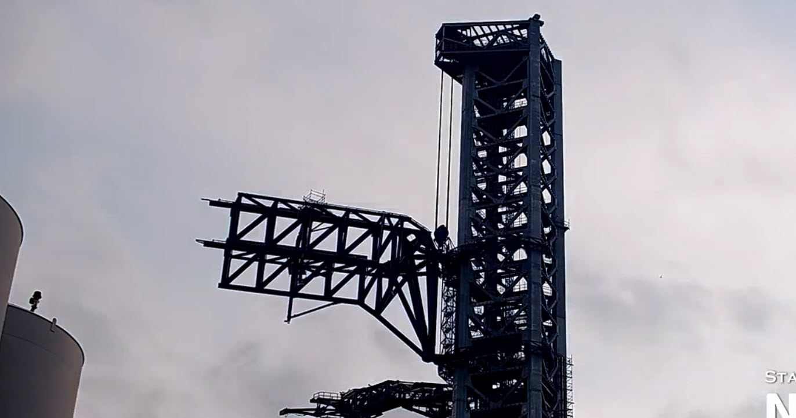

SpaceX est une entreprise spécialisée dans les domaines de
l'aéronautique et le vol spatiale, fondée en 2002
par Elon Musk. SpaceX à eu des débuts vraiment très compliqués,
Musk y avait mis absolument toute sa fortune
en enchaînant échec sur échec pendant des années.
Aujourd'hui SpaceX est la première et la seule entreprise
privée à avoir un contrat avec la NASA pour financer
ses avancés technologiques hors du commun.
L'entreprise ayant été celle qui a inventé les
fusées réutilisables tout en diminuant leur coup par 4 et a
aussi battu beaucoup de record comme le nombre de
réutilisation du même booster établi a 11 réutilisations,
le nombre de satellites envoyer en meme temps fixer à 143 et bien d'autres.
La StarbaseLa Starbase est le lieu de production et d'essais de tirde SpaceX et est considérée par Elon Musk comme le premier pas vers la colonisation de Mars. Elle se trouve à Boca chica au Texas et est divisée en 2 parties : la zone de production et d'assemblage où SpaceX assemble leurs fusées dans les entrepôts et la zone de lancement où se trouve la ferme à ergols (le carburant), la table orbitale (pas de tir), la mechazilla (tour de lancement) et d'autres installations plus techniques :) |
 |
|  |
MechazillaMechazilla est la tour de lancement de la Starbase disposant de 2 bras appeler "Chopsticks". Ces bras pourront attraper la fusée en plein vol et la déposer sur sa table orbitale. L'objectif étant de réduire le poids des fusées en retirant les treins d'atterrissages. Mechazilla pour également ravitailler la fusée en ergol ou assembler le ship à son booster. |
Le StarshipLe Starship est une fusée de 120m de haut développer parSpaceX. Elle a un revêtement thermique en tuiles noires qui la rend magnifique mais ça c'est que mon point de vue... Accompagner du booster Super Heavy B4, elle sera la fusée la plus puissante de tous les temps avec 7500t de poussée soit 2x plus que la Saturne 5 utilisée pour le programme Apollo. Elle fait déjà partie d'un contrat à 2.5 milliards de $ avec la NASA pour être utilisée comme atterrisseur lunaire dans le programme Artemis et sera certainement la pionnière des vols habiter sur Mars. Le SN15 était le premier prototype Starship à attérrir intact durant un vol historique en mai 2021. C'est le premier tire orbital du Ship 20 accompagner des 33 boosters du Super Heavy B4 que l'on attend surement pour printemps 2022. |
| Processus de récupération | ||
|---|---|---|
| Etape 1 | Propulseurs d'azote remettent les boosters droit quand ils sont encore dans l'orbite basse | |
| Etape 2 | Les "grid fin" stabilisent le booster durant l'entrée atmosphérique | |
| Etape 3 | Activation des réacteurs pour freiner la chute et déploiement des trains d'atterrissages | |
| Etape 4 | Les 2 boosters latéraux sont revenus au lieu du décollage et le booster central sur une plate-forme en mer | |